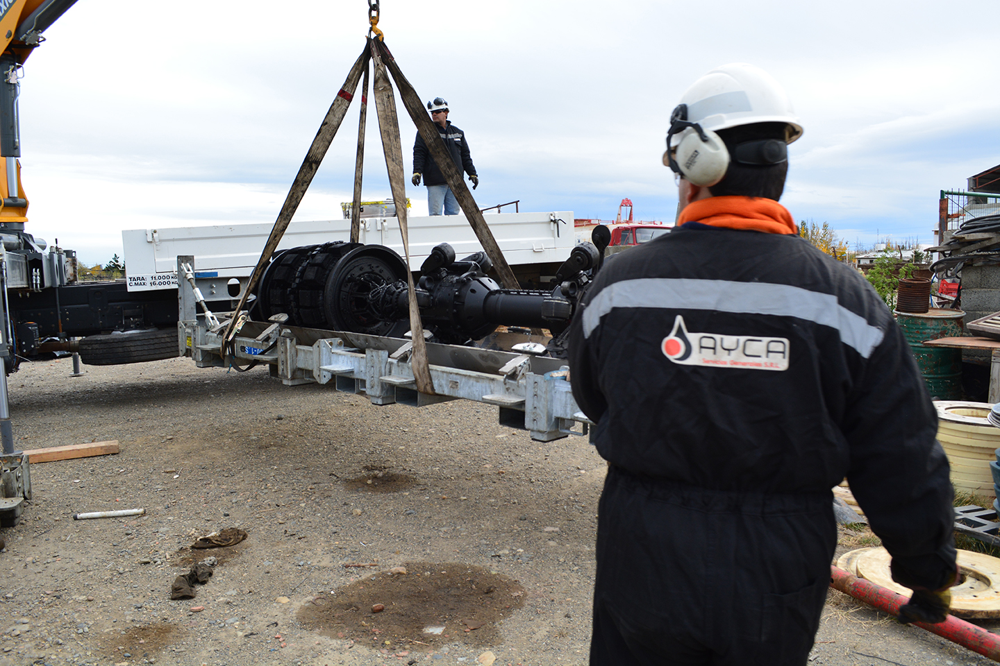
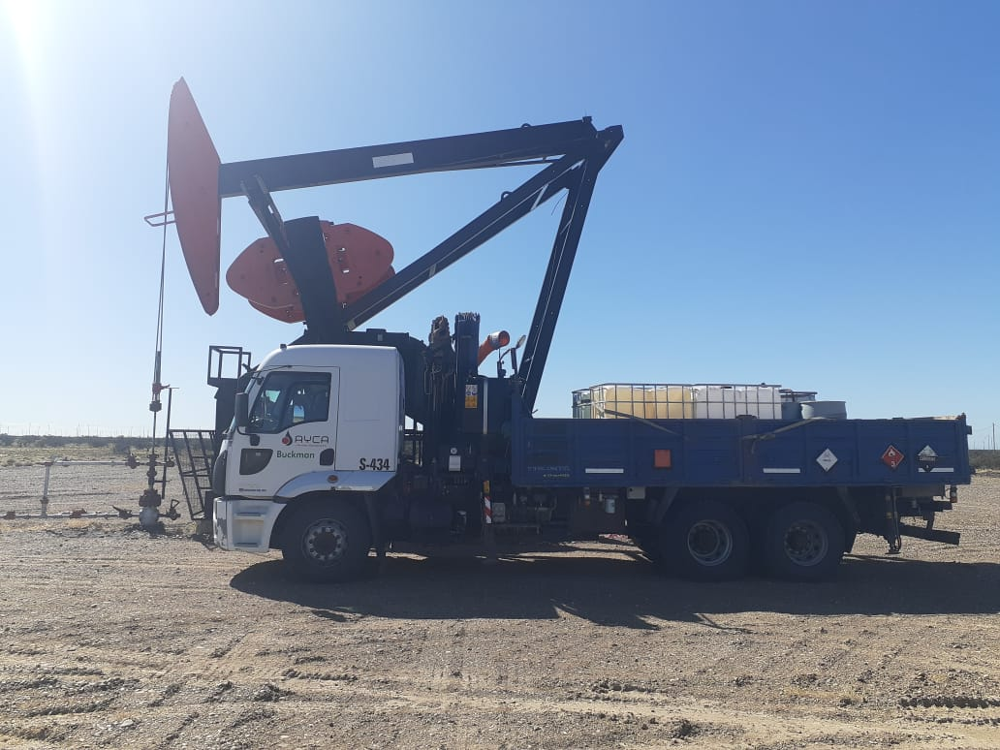
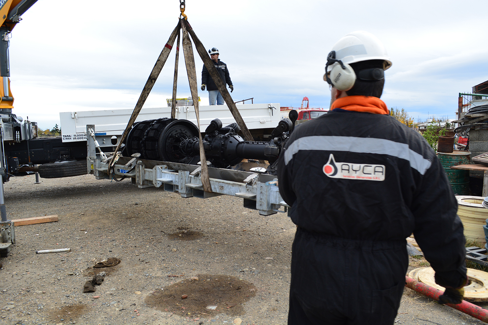
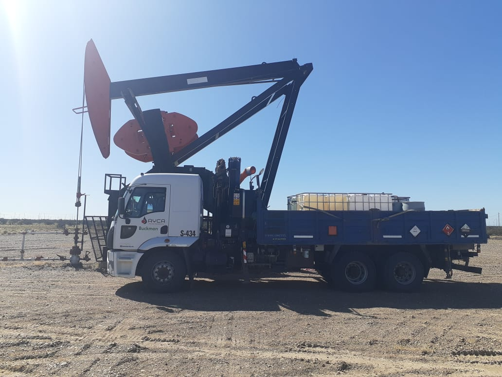
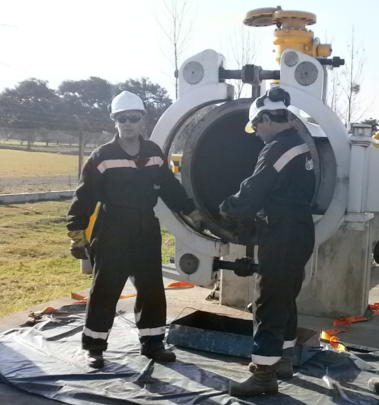
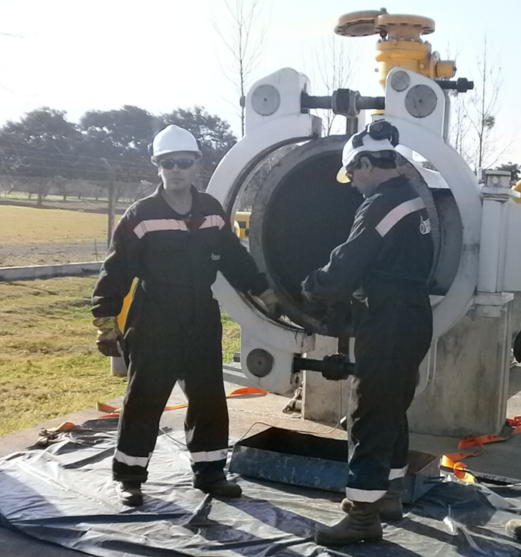

Relevamiento de lineas
Consiste en generar planos isométricos geo-referenciados de las lineas analizadas, identificando soportes, accesorios, curvas, espesores, etc..
Analisis de modo de fallas y amenzas
Haciendo uso de los códigos internacionales para las lineas analizadas, se identificaran los modos de falla y las amenazas según sus condiciones operativas, condiciones del entorno y ubicación geográfica..
Definicion de plan de Inspeccion
Se realizara un análisis de Riesgo cualitativo, definiendo el plan de inspección para lineas en estudio. En caso que la operadora cuente con su propio modelo de riesgo, la empresa prestara asistencia y brindara su experiencia para generar en conjunto el plan de inspección óptimo.
Servicio de patrullaje Terretre
Este servicio tiene por objetivo generar a la operadora un monitoreo terrestre de sus instalaciones con el fin de evitar y prevenir eventos que pudieran generar derrames o fugas que afectaran al medio ambiente y/o a las personas..
Servicio de Inspeccion no convencional
Cualquier inspección de este tipo, que la operadora crea necesaria, la empresa generara los procedimientos y el plan de ejecución para la realización de los ensayos pertinentes, sub contratando, gestionando y garantizando el resultado de los mismos. ej (face-array, eddy current, specials pigs, etc).
Servicio de Inspeccion interna ILI
En caso que el cliente requiera adecuar la linea para inspección mediante herramienta instrumentada, la empresa cuenta con el servicio de “Calibración” e “ingeniería y adecuación de lineas, accesorios y trampas de scraper ”. La combinación de ambos servicios permite satisfacer los requerimientos de la operadora.
Servicio de Aplicacion y distribucion de Productos Quimicos
AYCA brinda un servicio integral de logística para el almacenamiento, reposición, distribución e inyección de productos químicos en yacimiento a partir de un programa mensual otorgado por el cliente. Dispone de insumos y recursos propios, y otros aportados por el cliente, como son el mapeo de la zona de trabajo, con las geolocalizaciones de los pozos e instalaciones, que le permiten organizar el servicio con el fin de hacerlo eficiente y de calidad. Entre estos recursos se encuentran los vehículos (camionetas, camiones equipados con hidrogruas y bombas según necesidades) y personal capacitado. Además, el servicio adiciona la limpieza de instalaciones, muestreo, mantenimiento de bombas dosificadoras, control de dosificaciones, montaje de instalaciones, gracias a los recursos calificados que AYCA posee, para gestionar y administrar la base donde esos productos se encuentran almacenados, previo a su envío a yacimiento
Servicio de Inspeccion por metodos Convencionales
Este servicio incluye la inspección mediante la metodología visual, ultrasonido, radiografía, tintas penetrantes y partículas magnéticas. El servicio pretende establecer las técnicas de examen adecuado según códigos aplicables, enfocar en el estricto cumplimiento de las especificaciones y aplicar los criterios de prueba de conformidad con las especificaciones o normativas vigentes, evaluar los resultados y nivelar los resultados en pos de los requerimientos del cliente.
Galeria
 



 
